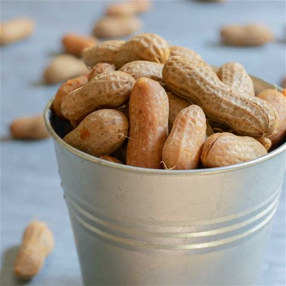

<-- Back to Home
Boiled Peanuts
Nilagang Mani

Boiled peanuts are a delicious and nutritious snack that can be enjoyed year-round.
They are easy to make and only require a few ingredients. Here is how to make boiled peanuts at home.
ingredients
- 2 pounds of raw peanuts in shells
- 1/4 cup of salt
- Water
- Optional: garlic, onion, Cajun seasoning, or other spices for extra flavor
Steps
- Rinse the peanuts and discard any that are damaged or moldy.
- Place the peanuts in a large pot and add enough water to cover them by 2 inches.
- Add the salt and any optional spices you like.
- Bring the water to a boil, then reduce the heat and simmer for 3 to 4 hours, or until the peanuts are soft and tender.
You may need to add more water during the cooking process to keep the peanuts submerged.
- Drain the peanuts and enjoy them hot or cold. You can store them in an airtight container in the refrigerator
for up to a week, or freeze them for up to 6 months.
I hope you enjoyed this boiled peanut recipe and found it easy to follow. Thank you for reading and happy snacking!